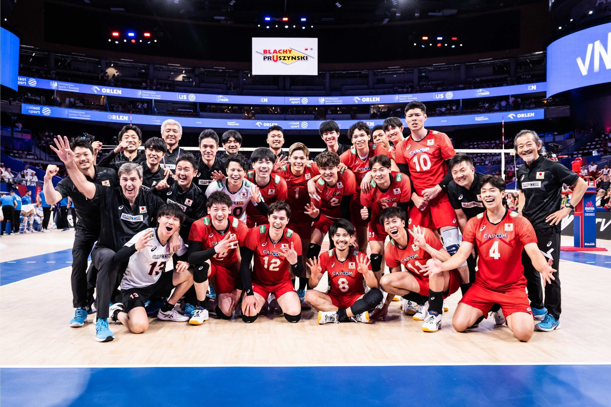

This is the National Volleyball team of Japan!
The National Volleyball team of Japan is called "RYUJIN NIPPON" which means "Japanese Dragon God" in Japanese. They parcipated in FIVB Volleyball Men's Nations League and they managed to land on the podium after defeating the world champions, Italy, in five sets in the bronze medal match. Despite them failing to get the gold and silver medal, they showed their immense improvement and growth during their bronze medal match. This is why, I love this team. They are bronze medalists in the match, but for me, they are more than a gold medal in my heart.